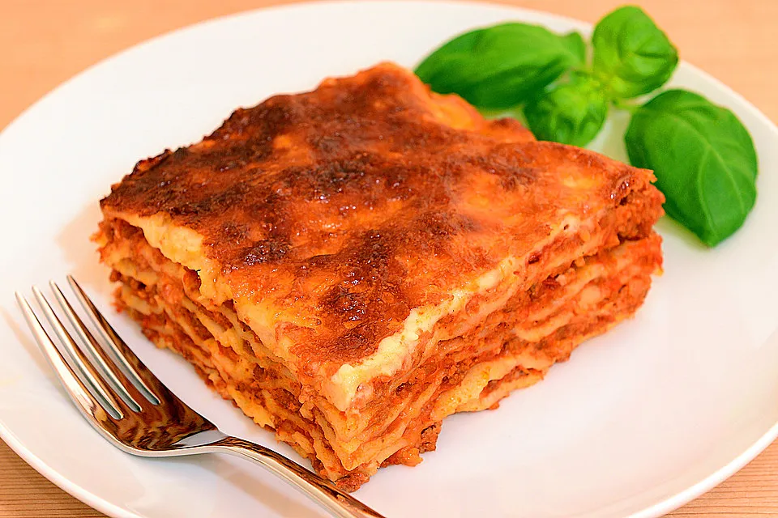

Lasagne
 30 Min.
30 Min.
 Normal
Normal
 14.10.2025
14.10.2025
| Olivenöl | |
| 500 | g Hackfleisch, gemischtes |
| 1 | Zwiebel(n) |
| 2 | Knoblauchzehe(n) |
| 1 | Bund Petersilie oder TK |
| 1 | EL Tomatenmark |
| 1 | Dose Tomaten, geschälte 800 g |
| etwas | Rotwein |
| 0.5 | Liter Milch |
| 30 | g Butter |
| 40 | g Mehl |
| Salz und Pfeffer | |
| Zitronensaft | |
| Muskat | |
| Fett für die Form | |
| Butterflöckchen | |
| 300 | g Lasagneplatte(n) |
| n. B. | Käse, geriebener |
Zubereitung
Ca. 30 Min. arbeitszeit
Gesamtzeit 1 Std. 40 Min
Ragú Bolognese:
In einem Topf das Olivenöl erhitzen, das Hackfleisch darin
rundherum anbraten und die gehackten Zwiebeln und die gehackte
Petersilie dazugeben. Knoblauch in feinen Scheiben und Tomatenmark
dazu rühren und mitbraten. Mit den Dosentomaten aufgießen, salzen
und pfeffern. Rotwein nach Belieben beifügen. Das Ragú mindestens
eine halbe Stunde lang bei geöffnetem Topf einkochen lassen.
Béchamelsauce:
Butter in einem kleinen Topf schmelzen und das Mehl mit dem
Schneebesen unterrühren und hellgelb anschwitzen. Die Milch
dazugießen und die Sauce glatt rühren. Wer zu langsam gerührt hat
und Klümpchen in der Sauce findet, kann die Sauce durch ein feines
Haarsieb passieren und dann weiterkochen lassen. Die Sauce sollte
fast eine halbe Stunde lang auf kleiner Flamme köcheln, damit sie
den Mehlgeschmack verliert. Mit Salz, Pfeffer und Zitronensaft
sowie etwas Muskatnuss abschmecken.
Zubereitung der Lasagne:
In einer gebutterten, feuerfesten Form etwas Ragú Bolognese
verteilen, eine Schicht Lasagneplatten darauf legen, die
Nudelschicht wieder mit Ragú und dann mit einer Schicht Béchamel
bedecken. Anschließend wieder eine Schicht Nudeln, Ragú und
Béchamel. So Schicht für Schicht die Form füllen. Die letzte
Schicht sollte die Béchamelsauce bilden. Dick mit geriebenem Käse
bestreuen und Butterflöckchen darauf setzen.
Die Lasagne im heißen Backofen bei 180 °C Umluft ca. 30 - 40
Minuten backen, bis die Kruste goldbraun ist.